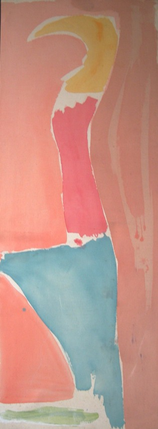

Mali Morris
b.1945
Artist Biography
Mali Morris was born in North Wales and studied art at Newcastle University from 1963-68 and then at Reading 1968-70. She lectured at Sunderland College of Art from 1970-74 before moving to London and she taught at Chelsea School of Art from 1991-2005. An abstract painter, Morris is known for her expressive use of colour. She first showed at the Hatton Gallery in Newcastle in the late 1960s and her work has since been included in major mixed exhibitions at the Serpentine Gallery, The Barbican and the South Bank Centre in London and also internationally. Her first solo show was at the Ikon Gallery, Birmingham in 1979 and she has had over thirty since, notably at Nicola Jacobs Gallery from 1980 and the Poussin Gallery in 2005. The Royal Academy, to which she was elected Professor of Painting at the RA Schools in 2019, gave her a small solo show, also in 2019. Ikon Gallery, Birmingham had a large solo show in 2023.

Rinaldo II, 1980